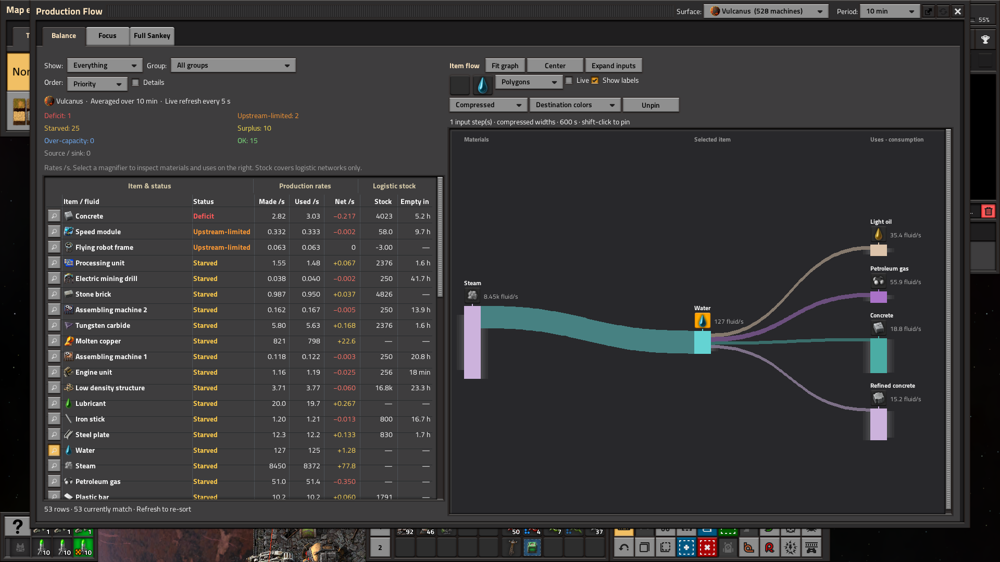
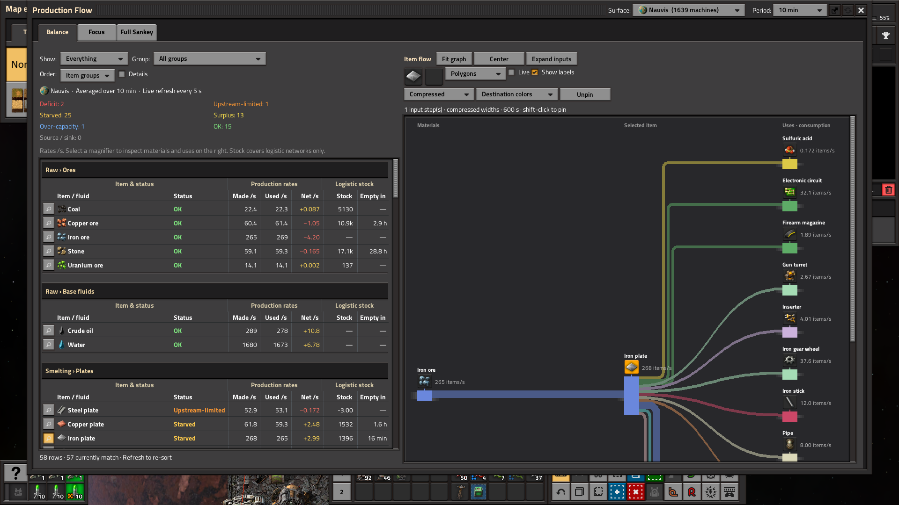
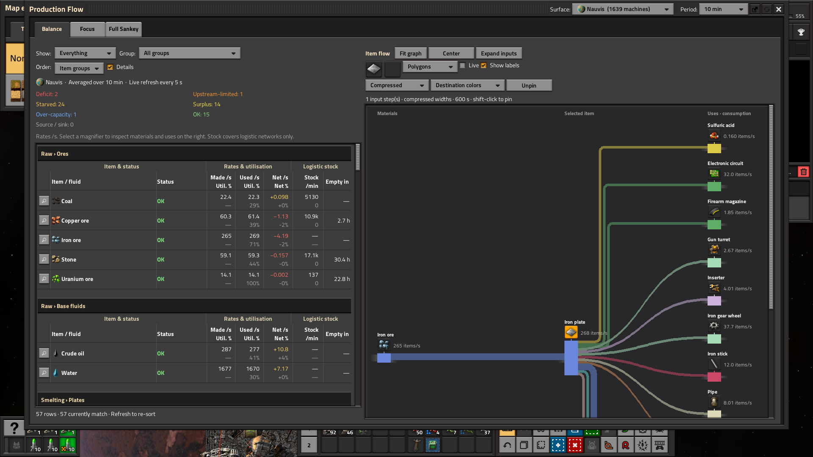
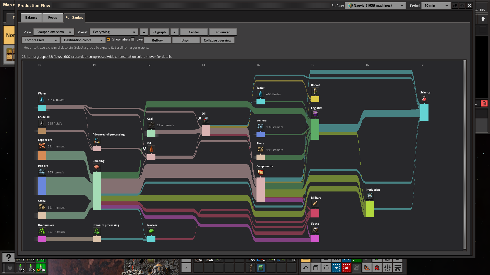
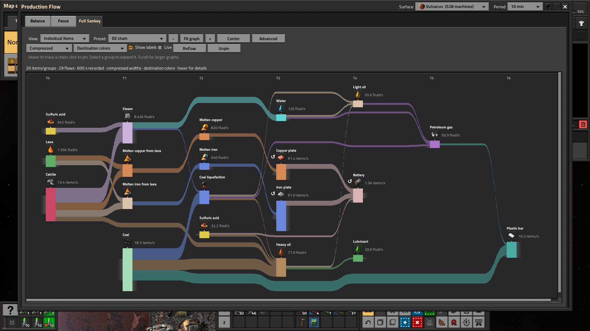
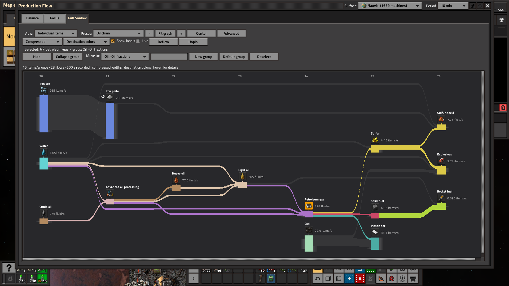
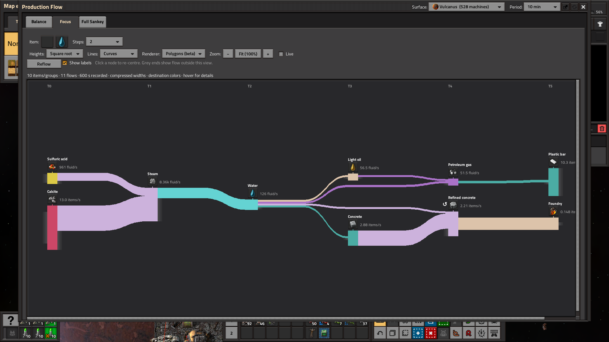

Production Flow 0.1.0 — beta review
Seven fresh, unedited native Factorio 2.1.23 screenshots from an isolated Space Age save. This candidate includes the approved item-group dividers and the live-selection fix. Author: TTLouis. License: MIT. No Mod Portal submission has been made.
Water inputs and uses
Steam condensation and water consumption per consumer.

Organized item groups
Shaded headers, row and column dividers, and vertical-only scrolling.

Details within each row
Utilisation, net percentage and stock trend remain paired with their values.

Full Sankey on Nauvis
An overview of measured production across the selected surface.

Fluid processing on Vulcanus
Condensation, liquefaction and connected fluid recipes.

A pinned petroleum chain
Highlight connected flows and dim unrelated branches.

Focus on water
Explore upstream and downstream recipe connections.
